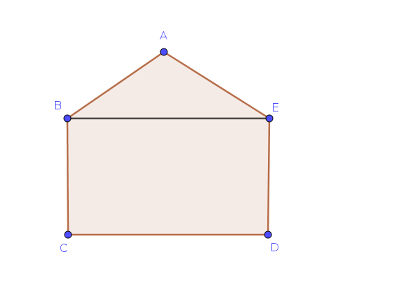
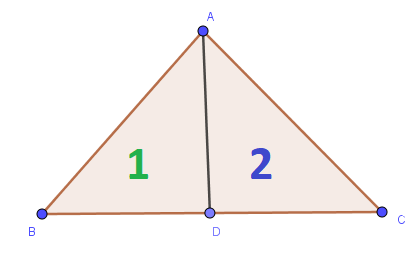
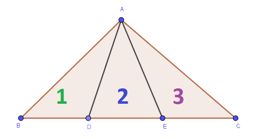
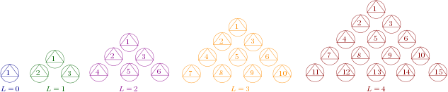
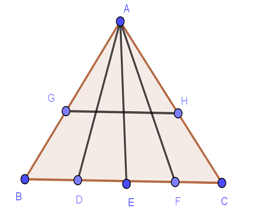
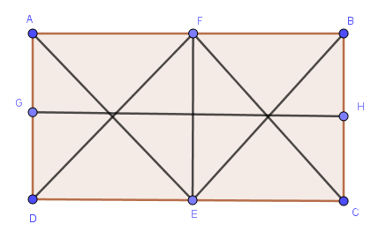
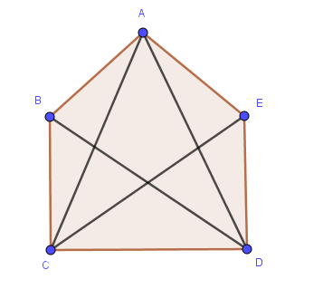
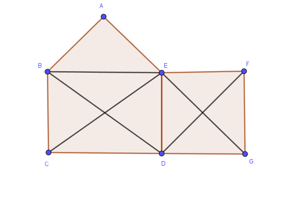
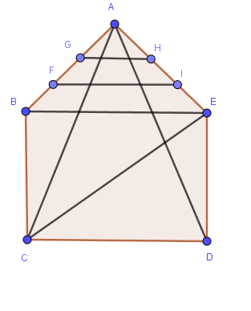

<!DOCTYPE html>

<html xmlns="http://www.w3.org/1999/xhtml">
  <head>
    <meta charset="utf-8" />
    <title>Math Puzzle: Counting triangles &#8212; Cybera Curriculum Notebooks</title>
    <link rel="stylesheet" href="https://cdnjs.cloudflare.com/ajax/libs/font-awesome/5.11.2/css/all.min.css" integrity="sha384-KA6wR/X5RY4zFAHpv/CnoG2UW1uogYfdnP67Uv7eULvTveboZJg0qUpmJZb5VqzN" crossorigin="anonymous">
    <link href="../../../_static/css/index.css" rel="stylesheet">
    <link rel="stylesheet" href="../../../_static/sphinx-book-theme.css" type="text/css" />
    <link rel="stylesheet" href="../../../_static/pygments.css" type="text/css" />
    <link rel="stylesheet" type="text/css" href="../../../_static/togglebutton.css" />
    <link rel="stylesheet" type="text/css" href="../../../_static/copybutton.css" />
    <link rel="stylesheet" type="text/css" href="../../../_static/mystnb.css" />
    <link rel="stylesheet" type="text/css" href="../../../_static/jupyter-sphinx.css" />
    <script type="text/javascript" id="documentation_options" data-url_root="../../../" src="../../../_static/documentation_options.js"></script>
    <script type="text/javascript" src="../../../_static/sphinx-book-theme.js"></script>
    <script type="text/javascript" src="../../../_static/jquery.js"></script>
    <script type="text/javascript" src="../../../_static/underscore.js"></script>
    <script type="text/javascript" src="../../../_static/doctools.js"></script>
    <script type="text/javascript" src="../../../_static/language_data.js"></script>
    <script type="text/javascript" src="../../../_static/togglebutton.js"></script>
    <script type="text/javascript" src="../../../_static/clipboard.min.js"></script>
    <script type="text/javascript" src="../../../_static/copybutton.js"></script>
    <script type="text/javascript" src="../../../_static/mystnb.js"></script>
    <script type="text/javascript" src="../../../_static/sphinx-book-theme.js"></script>
    <script type="text/javascript">var togglebuttonSelector = '.toggle, .admonition.dropdown, .tag_hide_input div.cell_input, .tag_hide-input div.cell_input, .tag_hide_output div.cell_output, .tag_hide-output div.cell_output, .tag_hide_cell.cell, .tag_hide-cell.cell';</script>
    <script type="text/javascript" src="https://cdnjs.cloudflare.com/ajax/libs/require.js/2.3.4/require.min.js"></script>
    <script type="text/javascript" src="https://unpkg.com/@jupyter-widgets/html-manager@^0.18.0/dist/embed-amd.js"></script>
    <script async="async" type="text/javascript" src="https://cdnjs.cloudflare.com/ajax/libs/mathjax/2.7.5/latest.js?config=TeX-AMS-MML_HTMLorMML"></script>
    <link rel="index" title="Index" href="../../../genindex.html" />
    <link rel="search" title="Search" href="../../../search.html" />

    <meta name="viewport" content="width=device-width, initial-scale=1">
    <meta name="docsearch:language" content="en">


  </head>
  <body data-spy="scroll" data-target="#bd-toc-nav" data-offset="80">
    

    <div class="container-xl">
      <div class="row">
          
<div class="col-12 col-md-3 bd-sidebar site-navigation show" id="site-navigation">
    
        <div class="navbar-brand-box">
<a class="navbar-brand text-wrap" href="../../../index.html">
  
  
  
  
  <h1 class="site-logo" id="site-title">Cybera Curriculum Notebooks</h1>
  
</a>
</div>

<form class="bd-search d-flex align-items-center" action="../../../search.html" method="get">
  <i class="icon fas fa-search"></i>
  <input type="search" class="form-control" name="q" id="search-input" placeholder="Search this book..." aria-label="Search this book..." autocomplete="off" >
</form>

<nav class="bd-links" id="bd-docs-nav" aria-label="Main navigation">
  
  <ul class="nav sidenav_l1">
  <li class="">
    <a href="../../../intro.html">Welcome to Callysto</a>
  </li>
  <li class="">
    <a href="../../README.html">Curriculum Notebooks</a>
  </li>
  <li class="">
    <a href="../../Arts/empty.html">Arts Notebooks</a>
  </li>
  <li class="">
    <a href="../../Science/empty.html">Science notebooks</a>
  </li>
  <li class="">
    <a href="../../Health/empty.html">Health notebooks</a>
  </li>
  <li class="">
    <a href="../../SocialStudies/empty.html">Social Studies notebooks</a>
  </li>
  <li class="">
    <a href="../../EnglishLanguageArts/empty.html">English Language Arts notebooks</a>
  </li>
  <li class="">
    <a href="../../TechnologyStudies/empty.html">Technology Studies notebooks</a>
  </li>
  <li class="">
    <a href="../../Languages/empty.html">Languages notebooks</a>
  </li>
</ul>
</nav>

 <!-- To handle the deprecated key -->

<div class="navbar_extra_footer">
  Powered by <a href="https://jupyterbook.org">Jupyter Book</a>
</div>

</div>


          


          
<main class="col py-md-3 pl-md-4 bd-content overflow-auto" role="main">
    
    <div class="row topbar fixed-top container-xl">
    <div class="col-12 col-md-3 bd-topbar-whitespace site-navigation show">
    </div>
    <div class="col pl-2 topbar-main">
        
        <button id="navbar-toggler" class="navbar-toggler ml-0" type="button" data-toggle="collapse"
            data-toggle="tooltip" data-placement="bottom" data-target=".site-navigation" aria-controls="navbar-menu"
            aria-expanded="true" aria-label="Toggle navigation" aria-controls="site-navigation"
            title="Toggle navigation" data-toggle="tooltip" data-placement="left">
            <i class="fas fa-bars"></i>
            <i class="fas fa-arrow-left"></i>
            <i class="fas fa-arrow-up"></i>
        </button>
        
        <div class="dropdown-buttons-trigger">
    <button id="dropdown-buttons-trigger" class="btn btn-secondary topbarbtn" aria-label="Download this page"><i
            class="fas fa-download"></i></button>

    
    <div class="dropdown-buttons">
        <!-- ipynb file if we had a myst markdown file -->
        
        <!-- Download raw file -->
        <a class="dropdown-buttons" href="../../../_sources/curriculum-notebooks/Mathematics/CountingTriangles/Counting_Triangles.ipynb"><button type="button"
                class="btn btn-secondary topbarbtn" title="Download source file" data-toggle="tooltip"
                data-placement="left">.ipynb</button></a>
        <!-- Download PDF via print -->
        <button type="button" id="download-print" class="btn btn-secondary topbarbtn" title="Print to PDF"
            onClick="window.print()" data-toggle="tooltip" data-placement="left">.pdf</button>
    </div>
    
</div>
        <!-- Source interaction buttons -->


        <!-- Full screen (wrap in <a> to have style consistency -->
        <a class="full-screen-button"><button type="button" class="btn btn-secondary topbarbtn" data-toggle="tooltip"
                data-placement="bottom" onclick="toggleFullScreen()" title="Fullscreen mode"><i
                    class="fas fa-expand"></i></button></a>

        <!-- Launch buttons -->

<div class="dropdown-buttons-trigger">
    <button id="dropdown-buttons-trigger" class="btn btn-secondary topbarbtn"
        aria-label="Launch interactive content"><i class="fas fa-rocket"></i></button>
    <div class="dropdown-buttons">
        
        <a class="binder-button" href="https://mybinder.org/v2/gh/callysto/curriculum-notebooks/master?urlpath=tree/curriculum-notebooks/Mathematics/CountingTriangles/Counting_Triangles.ipynb"><button type="button"
                class="btn btn-secondary topbarbtn" title="Launch Binder" data-toggle="tooltip"
                data-placement="left">Binder</button></a>
        
        
        <a class="jupyterhub-button" href="https://hub.callysto.ca/hub/user-redirect/git-pull?repo=https://github.com/callysto/curriculum-notebooks&urlpath=tree/curriculum-notebooks/curriculum-notebooks/Mathematics/CountingTriangles/Counting_Triangles.ipynb"><button type="button"
                class="btn btn-secondary topbarbtn" title="Launch JupyterHub" data-toggle="tooltip"
                data-placement="left">JupyterHub</button></a>
        
        
        
    </div>
</div>

    </div>
    <div class="d-none d-md-block col-md-2 bd-toc show">
<div class="tocsection onthispage pt-5 pb-3">
    <i class="fas fa-list"></i> On this page
</div>

<nav id="bd-toc-nav">
    <ul class="nav section-nav flex-column">
    
        <li class="nav-item toc-entry toc-h2">
            <a href="#preliminaries" class="nav-link">1. Preliminaries</a><ul class="nav section-nav flex-column">
                
        <li class="nav-item toc-entry toc-h3">
            <a href="#triangles-in-a-triangle" class="nav-link">1.1. Triangles in a triangle</a>
        </li>
    
        <li class="nav-item toc-entry toc-h3">
            <a href="#triangles-in-a-rectangle" class="nav-link">1.2. Triangles in a rectangle</a>
        </li>
    
            </ul>
        </li>
    
        <li class="nav-item toc-entry toc-h2">
            <a href="#triangles-in-a-pentagon" class="nav-link">2. Triangles in a pentagon</a>
        </li>
    
        <li class="nav-item toc-entry toc-h2">
            <a href="#alternate-method-for-counting-triangles" class="nav-link">3. Alternate Method for counting triangles</a>
        </li>
    
        <li class="nav-item toc-entry toc-h2">
            <a href="#test-yourself" class="nav-link">4. Test yourself</a>
        </li>
    
    </ul>
</nav>


    </div>
</div>
    <div id="main-content" class="row">
        <div class="col-12 col-md-9 pl-md-3 pr-md-0">
        
              <div>
                
  <p></p>
<p><a href="https://hub.callysto.ca/jupyter/hub/user-redirect/git-pull?repo=https%3A%2F%2Fgithub.com%2Fcallysto%2Fcurriculum-notebooks&branch=master&subPath=Mathematics/CountingTriangles/Counting_Triangles.ipynb&depth=1" target="_parent"></a></p>
<div class="cell docutils container">
<div class="cell_input docutils container">
<div class="highlight-default notranslate"><div class="highlight"><pre><span></span>%%html

&lt;script&gt;
 function code_toggle() {
   if (code_shown){
     $(&#39;div.input&#39;).hide(&#39;500&#39;);
     $(&#39;#toggleButton&#39;).val(&#39;Show Code&#39;)
   } else {
     $(&#39;div.input&#39;).show(&#39;500&#39;);
     $(&#39;#toggleButton&#39;).val(&#39;Hide Code&#39;)
   }
   code_shown = !code_shown
 }

 $( document ).ready(function(){
   code_shown=false;
   $(&#39;div.input&#39;).hide()
 });
&lt;/script&gt;
&lt;form action=&quot;javascript:code_toggle()&quot;&gt;&lt;input type=&quot;submit&quot; id=&quot;toggleButton&quot; value=&quot;Show Code&quot;&gt;&lt;/form&gt;
</pre></div>
</div>
</div>
<div class="cell_output docutils container">
<div class="output text_html">
<script>
 function code_toggle() {
   if (code_shown){
     $('div.input').hide('500');
     $('#toggleButton').val('Show Code')
   } else {
     $('div.input').show('500');
     $('#toggleButton').val('Hide Code')
   }
   code_shown = !code_shown
 }

 $( document ).ready(function(){
   code_shown=false;
   $('div.input').hide()
 });
</script>
<form action="javascript:code_toggle()"><input type="submit" id="toggleButton" value="Show Code"></form>
</div></div>
</div>
<div class="cell docutils container">
<div class="cell_input docutils container">
<div class="highlight-default notranslate"><div class="highlight"><pre><span></span>!pip install --upgrade --force-reinstall --user git+git://github.com/callysto/nbplus.git#egg=geogebra\&amp;subdirectory=geogebra
</pre></div>
</div>
</div>
<div class="cell_output docutils container">
<div class="output stream highlight-none notranslate"><div class="highlight"><pre><span></span>Collecting geogebra from git+git://github.com/callysto/nbplus.git#egg=geogebra&amp;subdirectory=geogebra
  Cloning git://github.com/callysto/nbplus.git to /tmp/pip-install-k5wuumz8/geogebra
  Running command git clone -q git://github.com/callysto/nbplus.git /tmp/pip-install-k5wuumz8/geogebra
</pre></div>
</div>
<div class="output stream highlight-none notranslate"><div class="highlight"><pre><span></span>Building wheels for collected packages: geogebra
</pre></div>
</div>
<div class="output stream highlight-none notranslate"><div class="highlight"><pre><span></span>  Building wheel for geogebra (setup.py) ... [?25l-
</pre></div>
</div>
<div class="output stream highlight-none notranslate"><div class="highlight"><pre><span></span> done
[?25h  Created wheel for geogebra: filename=geogebra-0.0.0-cp37-none-any.whl size=6210 sha256=5d9435871c49184e695d2d10e02bffe365110b5a9ed98a1777c06094211c694c
  Stored in directory: /tmp/pip-ephem-wheel-cache-cngfn77h/wheels/cd/8f/54/42a9349ed6e488bb120c4c182ad6aa4f19e86061fe875bf3c5
Successfully built geogebra
</pre></div>
</div>
<div class="output stream highlight-none notranslate"><div class="highlight"><pre><span></span>Installing collected packages: geogebra
  Found existing installation: geogebra 0.0.0
    Uninstalling geogebra-0.0.0:
      Successfully uninstalled geogebra-0.0.0
Successfully installed geogebra-0.0.0
</pre></div>
</div>
</div>
</div>
<div class="cell docutils container">
<div class="cell_input docutils container">
<div class="highlight-default notranslate"><div class="highlight"><pre><span></span><span class="kn">import</span> <span class="nn">numpy</span> <span class="k">as</span> <span class="nn">np</span>
<span class="kn">import</span> <span class="nn">matplotlib.mlab</span> <span class="k">as</span> <span class="nn">mlab</span>
<span class="kn">import</span> <span class="nn">matplotlib.pyplot</span> <span class="k">as</span> <span class="nn">plt</span>
<span class="kn">from</span> <span class="nn">ipywidgets</span> <span class="k">import</span> <span class="n">interact</span><span class="p">,</span> <span class="n">widgets</span><span class="p">,</span> <span class="n">Button</span><span class="p">,</span> <span class="n">Layout</span>

<span class="kn">from</span> <span class="nn">scipy</span> <span class="k">import</span> <span class="n">stats</span>
<span class="kn">from</span> <span class="nn">collections</span> <span class="k">import</span> <span class="n">Counter</span>
<span class="kn">from</span> <span class="nn">array</span> <span class="k">import</span> <span class="n">array</span>
<span class="kn">from</span> <span class="nn">statistics</span> <span class="k">import</span> <span class="n">mode</span>
<span class="kn">import</span> <span class="nn">IPython</span>
<span class="kn">from</span> <span class="nn">IPython.display</span> <span class="k">import</span> <span class="n">Image</span>
<span class="kn">import</span> <span class="nn">pandas</span>

<span class="kn">from</span> <span class="nn">ggb</span> <span class="k">import</span> <span class="o">*</span>
<span class="n">ggb</span> <span class="o">=</span> <span class="n">GGB</span><span class="p">()</span>
</pre></div>
</div>
</div>
<div class="cell_output docutils container">
<script type="application/javascript">
            require.config({
                paths: {
                    ggb: "https://cdn.geogebra.org/apps/deployggb"
                }
            });

            require(["ggb"]);
        </script></div>
</div>
<div class="section" id="math-puzzle-counting-triangles">
<h1>Math Puzzle: Counting triangles<a class="headerlink" href="#math-puzzle-counting-triangles" title="Permalink to this headline">¶</a></h1>
<p>In this notebook we explore two methods for counting the total number of triangles in a pentagon.
<br> Organization of the notebook:</p>
<ul class="simple">
<li><p>Section 1 discusses some preliminaries for the problem.</p></li>
<li><p>Section 2 presents an animation of counting triangles in a pentagon.</p></li>
<li><p>Section 3 presents an alternate method for counting triangles in a pentagon.</p></li>
<li><p>Section 4 concludes the notebook with some exercises.</p></li>
</ul>
<div class="section" id="preliminaries">
<h2>1. Preliminaries<a class="headerlink" href="#preliminaries" title="Permalink to this headline">¶</a></h2>
<p>Let’s consider a pentagon <span class="math notranslate nohighlight">\(ABCDE.\)</span> If we connect <span class="math notranslate nohighlight">\(B\)</span> and <span class="math notranslate nohighlight">\(E\)</span> then we can divide the pentagon into a triangle, <span class="math notranslate nohighlight">\(ABE\)</span>, and a rectangle, <span class="math notranslate nohighlight">\(BCDE\)</span>.<br>
So, our preliminary discussion will be to count how many triangles we get as we divide the triangle and rectangle.
</p>
<div class="section" id="triangles-in-a-triangle">
<h3>1.1. Triangles in a triangle<a class="headerlink" href="#triangles-in-a-triangle" title="Permalink to this headline">¶</a></h3>
<p>Let’s consider a triangle <span class="math notranslate nohighlight">\(ABC\)</span>. First, we draw a line <span class="math notranslate nohighlight">\(AD\)</span> from <span class="math notranslate nohighlight">\(A\)</span> to <span class="math notranslate nohighlight">\(BC\)</span> as shown in the following figure. <br>
We can see that there are two triangles: <span class="math notranslate nohighlight">\(ABD\)</span> and <span class="math notranslate nohighlight">\(ACD.\)</span> <br>
Actually in this picture there are three different triangles, since we still count the original triangle <span class="math notranslate nohighlight">\(ABC.\)</span>
</p>
<p>Now let’s add two points, <span class="math notranslate nohighlight">\(D\)</span> and <span class="math notranslate nohighlight">\(E\)</span>, along the bottom, draw lines to them from <span class="math notranslate nohighlight">\(A\)</span>, and see what we get.</p>
<p></p>
<p>Let us find the all triangles for this scenario.</p>
<ul class="simple">
<li><p>Step 1: consider all smaller triangles. <br>
From the figure we can see that the large triangle <span class="math notranslate nohighlight">\(ABC\)</span> consists of three small triangles: <span class="math notranslate nohighlight">\(ABD, ADE, ACE\)</span>.</p></li>
<li><p>Step 2: try to merge two small triangles to make a larger triangle. <br>
For example, if we merge triangle <span class="math notranslate nohighlight">\(ABD\)</span> with <span class="math notranslate nohighlight">\(ADE\)</span> then we find <span class="math notranslate nohighlight">\(ABE\)</span>. Similarly, we find <span class="math notranslate nohighlight">\(ACD\)</span>.</p></li>
<li><p>Step 3: join three small triangles to generate larger one. <br>
Merging all three small triangles we find triangle <span class="math notranslate nohighlight">\(ABC.\)</span></p></li>
</ul>
<p>In total, there are <span class="math notranslate nohighlight">\(3+2+1=6\)</span> triangles.</p>
<p>Now if we add one more line <span class="math notranslate nohighlight">\(AF\)</span> from <span class="math notranslate nohighlight">\(A\)</span> to line <span class="math notranslate nohighlight">\(BC\)</span>, how many triangles do we get?.<br>
Draw the triangle <span class="math notranslate nohighlight">\(ABC\)</span> and count the triangles. <br></p>
<ol class="simple">
<li><p>There are now 4 small triangles.</p></li>
<li><p>There are three pairs of adjacent triangles we can combine to make larger triangles.</p></li>
<li><p>There are two ways to combine three triangles: the first three, or the last three.</p></li>
<li><p>As always, there is the original big triangle.</p></li>
</ol>
<p>Did you find the answer? We have <span class="math notranslate nohighlight">\(4+3+2+1=10\)</span> triangles.</p>
<p>Can you guess how many triangles we’ll get if we add one more line from the top to the bottom?<br></p>
<ul class="simple">
<li><p>With 0 lines, there was <span class="math notranslate nohighlight">\(1\)</span> triangle.</p></li>
<li><p>With 1 line, there were <span class="math notranslate nohighlight">\(1+2=3\)</span> triangles.</p></li>
<li><p>With 2 lines, there were <span class="math notranslate nohighlight">\(1+2+3=6\)</span> triangles.</p></li>
<li><p>With 3 lines, there were <span class="math notranslate nohighlight">\(1+2+3+4=10\)</span> triangles.</p></li>
</ul>
<p>Did you guess 15 triangles for the next step? If so, well done!<br>
The numbers that count how many triangles we have at each step are called the <a class="reference external" href="https://en.wikipedia.org/wiki/Triangular_number"><em><strong>triangular numbers</strong></em></a>.</p>
<p>The name comes from something a child might obeserve while stacking blocks:<br>
It’s the number of blocks you need to create a stack of blocks in the shape of a triangle:</p>
<p>
In the above figure, <strong>L</strong> denotes the number of “lines” in a triangle.</p>
<p>If you’re comfortable with formulas, here’s a cool fact:<br>
The number of blocks needed to make a triangular stack with <span class="math notranslate nohighlight">\(n\)</span> levels is <span class="math notranslate nohighlight">\(\dfrac{n(n+1)}{2}\)</span> ; where <span class="math notranslate nohighlight">\(n = L + 1\)</span></p>
<p>There’s a fun (but maybe not entirely true) story associated with this formula:<br>
As a child, the mathematician <a class="reference external" href="https://en.wikipedia.org/wiki/Carl_Friedrich_Gauss">Carl Friederic Gauss</a> was annoying his teacher one day.<br>
To keep Gauss busy, the teacher asked him to add up the numbers from 1 to 100.<br>
In a matter of minutes, Gauss discovered the formula, determined the answer (which is <span class="math notranslate nohighlight">\(\dfrac{100\times 101}{2}=5050\)</span>), and went back to annoying his teacher.</p>
<p>For better understanding consider the following animation. Change the slider value of <span class="math notranslate nohighlight">\(n\)</span> and observe how we count the triangles.</p>
<div class="cell docutils container">
<div class="cell_input docutils container">
<div class="highlight-default notranslate"><div class="highlight"><pre><span></span><span class="n">ggb</span><span class="o">.</span><span class="n">file</span><span class="p">(</span><span class="s1">&#39;sources/triangleAnimation.ggb&#39;</span><span class="p">)</span><span class="o">.</span><span class="n">draw</span><span class="p">()</span>
</pre></div>
</div>
</div>
<div class="cell_output docutils container">
<div class="output text_html"><div id="ggb_0_0e"></div></div><script type="application/javascript">var ggb_0_0e = new GGBApplet({"filename": "sources/triangleAnimation.ggb"}, "ggb_0_0e", false); ggb_0_0e.inject(); </script></div>
</div>
</div>
<div class="section" id="triangles-in-a-rectangle">
<h3>1.2. Triangles in a rectangle<a class="headerlink" href="#triangles-in-a-rectangle" title="Permalink to this headline">¶</a></h3>
<p>To determine the number of triangles in a rectangle, at first label every small triangle. The total number of triangles will be the double of highest labelling number. For example, consider a rectangle ABCD, where every vertex is connected with each other. If we start to label the smaller triangles from <span class="math notranslate nohighlight">\(1\)</span> we end up with four triangles. So, the total number of triangles is <span class="math notranslate nohighlight">\(4 \times 2 = 8\)</span>. Now, play with the following animation.</p>
<div class="cell docutils container">
<div class="cell_input docutils container">
<div class="highlight-default notranslate"><div class="highlight"><pre><span></span><span class="n">ggb</span><span class="o">.</span><span class="n">file</span><span class="p">(</span><span class="s1">&#39;sources/quadAnimation.ggb&#39;</span><span class="p">)</span><span class="o">.</span><span class="n">draw</span><span class="p">()</span>
</pre></div>
</div>
</div>
<div class="cell_output docutils container">
<div class="output text_html"><div id="ggb_1_0e"></div></div><script type="application/javascript">var ggb_1_0e = new GGBApplet({"filename": "sources/quadAnimation.ggb"}, "ggb_1_0e", false); ggb_1_0e.inject(); </script></div>
</div>
</div>
</div>
<div class="section" id="triangles-in-a-pentagon">
<h2>2. Triangles in a pentagon<a class="headerlink" href="#triangles-in-a-pentagon" title="Permalink to this headline">¶</a></h2>
<p>Now that we’ve seen how to count how many triangles we get when we draw lines in a larger triangle, and how to count triangles in a rectangle, we put the two together, and determine the number of triangles in a pentagon, as the next animation demonstrates.</p>
<div class="cell docutils container">
<div class="cell_input docutils container">
<div class="highlight-default notranslate"><div class="highlight"><pre><span></span><span class="n">ggb</span><span class="o">.</span><span class="n">file</span><span class="p">(</span><span class="s1">&#39;sources/pentaAnimation.ggb&#39;</span><span class="p">)</span><span class="o">.</span><span class="n">draw</span><span class="p">()</span>
</pre></div>
</div>
</div>
<div class="cell_output docutils container">
<div class="output text_html"><div id="ggb_2_0e"></div></div><script type="application/javascript">var ggb_2_0e = new GGBApplet({"filename": "sources/pentaAnimation.ggb"}, "ggb_2_0e", false); ggb_2_0e.inject(); </script></div>
</div>
</div>
<div class="section" id="alternate-method-for-counting-triangles">
<h2>3. Alternate Method for counting triangles<a class="headerlink" href="#alternate-method-for-counting-triangles" title="Permalink to this headline">¶</a></h2>
<p>There is a second method to count the triangles in a pentagon, when all vertices are connected.<br>
This is the angular, or symmetry method. It relies on the following fact:</p>
<blockquote>
<div><p>Rotating a regular pentagon by <span class="math notranslate nohighlight">\(72^\circ\)</span> (one fifth of a full rotation) produces the same pentagon.<br>
(In other words, all that changes is the labelling of the corners.)</p>
</div></blockquote>
<p>Here, we will count all similar triangles at a time. <br>
There are seven distinct groups of triangles in a pentagon when all vertices are connected with each other.<br>
The symmetry noted above tells us there are 5 triangles in each group. <br>
So the total number of the triangles in the Pentagon is 7x5=35.</p>
<p>Let’s play the following animation to find the seven groups. The sliders <span class="math notranslate nohighlight">\(n\)</span> and <span class="math notranslate nohighlight">\(i\)</span> represent the number of groups and the number of triangles corresponding to a group, respectively.</p>
<div class="cell docutils container">
<div class="cell_input docutils container">
<div class="highlight-default notranslate"><div class="highlight"><pre><span></span><span class="n">ggb</span><span class="o">.</span><span class="n">file</span><span class="p">(</span><span class="s1">&#39;sources/pentaMethod2.ggb&#39;</span><span class="p">)</span><span class="o">.</span><span class="n">draw</span><span class="p">()</span>
</pre></div>
</div>
</div>
<div class="cell_output docutils container">
<div class="output text_html"><div id="ggb_3_0e"></div></div><script type="application/javascript">var ggb_3_0e = new GGBApplet({"filename": "sources/pentaMethod2.ggb"}, "ggb_3_0e", false); ggb_3_0e.inject(); </script></div>
</div>
</div>
<div class="section" id="test-yourself">
<h2>4. Test yourself<a class="headerlink" href="#test-yourself" title="Permalink to this headline">¶</a></h2>
<div class="cell docutils container">
<div class="cell_input docutils container">
<div class="highlight-default notranslate"><div class="highlight"><pre><span></span><span class="k">def</span> <span class="nf">display</span><span class="p">(</span><span class="n">question</span><span class="p">,</span> <span class="n">answerList</span><span class="p">):</span>
    <span class="nb">print</span><span class="p">(</span><span class="n">question</span><span class="p">)</span>
    <span class="n">IPython</span><span class="o">.</span><span class="n">display</span><span class="o">.</span><span class="n">display</span><span class="p">(</span><span class="n">answerList</span><span class="p">)</span>
</pre></div>
</div>
</div>
</div>
<p>Consider the follwing triangle ABC:
</p>
<div class="cell docutils container">
<div class="cell_input docutils container">
<div class="highlight-default notranslate"><div class="highlight"><pre><span></span><span class="n">answer642</span> <span class="o">=</span> <span class="n">widgets</span><span class="o">.</span><span class="n">RadioButtons</span><span class="p">(</span><span class="n">options</span><span class="o">=</span><span class="p">[</span><span class="s1">&#39;Select the best one&#39;</span><span class="p">,</span> <span class="s1">&#39;20&#39;</span><span class="p">,</span> <span class="s1">&#39;10&#39;</span><span class="p">,</span> <span class="s1">&#39;22&#39;</span><span class="p">,</span> <span class="s1">&#39;12&#39;</span><span class="p">,</span> <span class="s1">&#39;None of the above&#39;</span><span class="p">],</span>
                             <span class="n">value</span> <span class="o">=</span> <span class="s1">&#39;Select the best one&#39;</span><span class="p">,</span>  <span class="n">description</span><span class="o">=</span><span class="s1">&#39;Choices:&#39;</span><span class="p">)</span>

<span class="n">question642</span> <span class="o">=</span> <span class="s2">&quot;4.1 How many triangles are in the above triangle?&quot;</span>

<span class="k">def</span> <span class="nf">check642</span><span class="p">(</span><span class="n">g</span><span class="p">):</span>
    <span class="n">IPython</span><span class="o">.</span><span class="n">display</span><span class="o">.</span><span class="n">clear_output</span><span class="p">(</span><span class="n">wait</span><span class="o">=</span><span class="kc">False</span><span class="p">)</span>
    <span class="n">display</span><span class="p">(</span><span class="n">question642</span><span class="p">,</span> <span class="n">answer642</span><span class="p">)</span>
    <span class="k">if</span> <span class="n">answer642</span><span class="o">.</span><span class="n">value</span> <span class="o">==</span> <span class="s1">&#39;20&#39;</span><span class="p">:</span>
        <span class="nb">print</span><span class="p">(</span><span class="s2">&quot;Correct Answer!&quot;</span><span class="p">)</span>
    <span class="k">else</span><span class="p">:</span>
        <span class="k">if</span> <span class="n">answer642</span><span class="o">.</span><span class="n">value</span> <span class="o">==</span> <span class="s1">&#39;Select the best one&#39;</span><span class="p">:</span>
            <span class="k">pass</span>
        <span class="k">else</span><span class="p">:</span>
            <span class="nb">print</span><span class="p">(</span><span class="s2">&quot;Wrong answer! Try again.&quot;</span><span class="p">)</span>

<span class="n">IPython</span><span class="o">.</span><span class="n">display</span><span class="o">.</span><span class="n">clear_output</span><span class="p">(</span><span class="n">wait</span><span class="o">=</span><span class="kc">False</span><span class="p">)</span>
<span class="n">display</span><span class="p">(</span><span class="n">question642</span><span class="p">,</span> <span class="n">answer642</span><span class="p">)</span>
<span class="n">answer642</span><span class="o">.</span><span class="n">observe</span><span class="p">(</span><span class="n">check642</span><span class="p">,</span> <span class="s1">&#39;value&#39;</span><span class="p">)</span>
</pre></div>
</div>
</div>
<div class="cell_output docutils container">
<div class="output stream highlight-none notranslate"><div class="highlight"><pre><span></span>4.1 How many triangles are in the above triangle?
</pre></div>
</div>
<script type="application/vnd.jupyter.widget-view+json">
{"version_major": 2, "version_minor": 0, "model_id": "5dbe53b272924d7c95c1eab889531779"}
</script></div>
</div>
<p>In the following figure two small rectangles (ADEF and BCEF) join each other and produce another large rectangle ABCD:
</p>
<div class="cell docutils container">
<div class="cell_input docutils container">
<div class="highlight-default notranslate"><div class="highlight"><pre><span></span><span class="n">answer642</span> <span class="o">=</span> <span class="n">widgets</span><span class="o">.</span><span class="n">RadioButtons</span><span class="p">(</span><span class="n">options</span><span class="o">=</span><span class="p">[</span><span class="s1">&#39;Select the best one&#39;</span><span class="p">,</span> <span class="s1">&#39;20&#39;</span><span class="p">,</span> <span class="s1">&#39;22&#39;</span><span class="p">,</span> <span class="s1">&#39;24&#39;</span><span class="p">,</span> <span class="s1">&#39;26&#39;</span><span class="p">,</span> <span class="s1">&#39;None of the above&#39;</span><span class="p">],</span>
                             <span class="n">value</span> <span class="o">=</span> <span class="s1">&#39;Select the best one&#39;</span><span class="p">,</span>  <span class="n">description</span><span class="o">=</span><span class="s1">&#39;Choices:&#39;</span><span class="p">)</span>

<span class="n">question642</span> <span class="o">=</span> <span class="s2">&quot;4.2 How many triangles are in the large rectangle?&quot;</span>

<span class="k">def</span> <span class="nf">check642</span><span class="p">(</span><span class="n">g</span><span class="p">):</span>
    <span class="n">IPython</span><span class="o">.</span><span class="n">display</span><span class="o">.</span><span class="n">clear_output</span><span class="p">(</span><span class="n">wait</span><span class="o">=</span><span class="kc">False</span><span class="p">)</span>
    <span class="n">display</span><span class="p">(</span><span class="n">question642</span><span class="p">,</span> <span class="n">answer642</span><span class="p">)</span>
    <span class="k">if</span> <span class="n">answer642</span><span class="o">.</span><span class="n">value</span> <span class="o">==</span> <span class="s1">&#39;26&#39;</span><span class="p">:</span>
        <span class="nb">print</span><span class="p">(</span><span class="s2">&quot;Correct Answer!&quot;</span><span class="p">)</span>
    <span class="k">else</span><span class="p">:</span>
        <span class="k">if</span> <span class="n">answer642</span><span class="o">.</span><span class="n">value</span> <span class="o">==</span> <span class="s1">&#39;Select the best one&#39;</span><span class="p">:</span>
            <span class="k">pass</span>
        <span class="k">else</span><span class="p">:</span>
            <span class="nb">print</span><span class="p">(</span><span class="s2">&quot;Wrong answer! Try again.&quot;</span><span class="p">)</span>

<span class="n">IPython</span><span class="o">.</span><span class="n">display</span><span class="o">.</span><span class="n">clear_output</span><span class="p">(</span><span class="n">wait</span><span class="o">=</span><span class="kc">False</span><span class="p">)</span>
<span class="n">display</span><span class="p">(</span><span class="n">question642</span><span class="p">,</span> <span class="n">answer642</span><span class="p">)</span>
<span class="n">answer642</span><span class="o">.</span><span class="n">observe</span><span class="p">(</span><span class="n">check642</span><span class="p">,</span> <span class="s1">&#39;value&#39;</span><span class="p">)</span>
</pre></div>
</div>
</div>
<div class="cell_output docutils container">
<div class="output stream highlight-none notranslate"><div class="highlight"><pre><span></span>4.2 How many triangles are in the large rectangle?
</pre></div>
</div>
<script type="application/vnd.jupyter.widget-view+json">
{"version_major": 2, "version_minor": 0, "model_id": "3c8d330c59a748c5a650ac33f06597de"}
</script></div>
</div>
<p>Consider a pentagon as drawn in the following figure:
</p>
<div class="cell docutils container">
<div class="cell_input docutils container">
<div class="highlight-default notranslate"><div class="highlight"><pre><span></span><span class="n">answer642</span> <span class="o">=</span> <span class="n">widgets</span><span class="o">.</span><span class="n">RadioButtons</span><span class="p">(</span><span class="n">options</span><span class="o">=</span><span class="p">[</span><span class="s1">&#39;Select the best one&#39;</span><span class="p">,</span> <span class="s1">&#39;20&#39;</span><span class="p">,</span> <span class="s1">&#39;17&#39;</span><span class="p">,</span> <span class="s1">&#39;15&#39;</span><span class="p">,</span> <span class="s1">&#39;13&#39;</span><span class="p">,</span> <span class="s1">&#39;None of the above&#39;</span><span class="p">],</span>
                             <span class="n">value</span> <span class="o">=</span> <span class="s1">&#39;Select the best one&#39;</span><span class="p">,</span>  <span class="n">description</span><span class="o">=</span><span class="s1">&#39;Choices:&#39;</span><span class="p">)</span>

<span class="n">question642</span> <span class="o">=</span> <span class="s2">&quot;4.3 How many triangles are in the above pentagon?&quot;</span>

<span class="k">def</span> <span class="nf">check642</span><span class="p">(</span><span class="n">g</span><span class="p">):</span>
    <span class="n">IPython</span><span class="o">.</span><span class="n">display</span><span class="o">.</span><span class="n">clear_output</span><span class="p">(</span><span class="n">wait</span><span class="o">=</span><span class="kc">False</span><span class="p">)</span>
    <span class="n">display</span><span class="p">(</span><span class="n">question642</span><span class="p">,</span> <span class="n">answer642</span><span class="p">)</span>
    <span class="k">if</span> <span class="n">answer642</span><span class="o">.</span><span class="n">value</span> <span class="o">==</span> <span class="s1">&#39;17&#39;</span><span class="p">:</span>
        <span class="nb">print</span><span class="p">(</span><span class="s2">&quot;Correct Answer!&quot;</span><span class="p">)</span>
    <span class="k">else</span><span class="p">:</span>
        <span class="k">if</span> <span class="n">answer642</span><span class="o">.</span><span class="n">value</span> <span class="o">==</span> <span class="s1">&#39;Select the best one&#39;</span><span class="p">:</span>
            <span class="k">pass</span>
        <span class="k">else</span><span class="p">:</span>
            <span class="nb">print</span><span class="p">(</span><span class="s2">&quot;Wrong answer! Try again.&quot;</span><span class="p">)</span>

<span class="n">IPython</span><span class="o">.</span><span class="n">display</span><span class="o">.</span><span class="n">clear_output</span><span class="p">(</span><span class="n">wait</span><span class="o">=</span><span class="kc">False</span><span class="p">)</span>
<span class="n">display</span><span class="p">(</span><span class="n">question642</span><span class="p">,</span> <span class="n">answer642</span><span class="p">)</span>
<span class="n">answer642</span><span class="o">.</span><span class="n">observe</span><span class="p">(</span><span class="n">check642</span><span class="p">,</span> <span class="s1">&#39;value&#39;</span><span class="p">)</span>
</pre></div>
</div>
</div>
<div class="cell_output docutils container">
<div class="output stream highlight-none notranslate"><div class="highlight"><pre><span></span>4.3 How many triangles are in the above pentagon?
</pre></div>
</div>
<script type="application/vnd.jupyter.widget-view+json">
{"version_major": 2, "version_minor": 0, "model_id": "73746463dd2d4fe1b8c3bcaa8f03d880"}
</script></div>
</div>
<p>A pentagon ABCDE and a rectangle touch as like as the following figure:
</p>
<div class="cell docutils container">
<div class="cell_input docutils container">
<div class="highlight-default notranslate"><div class="highlight"><pre><span></span><span class="n">answer642</span> <span class="o">=</span> <span class="n">widgets</span><span class="o">.</span><span class="n">RadioButtons</span><span class="p">(</span><span class="n">options</span><span class="o">=</span><span class="p">[</span><span class="s1">&#39;Select the best one&#39;</span><span class="p">,</span> <span class="s1">&#39;20&#39;</span><span class="p">,</span> <span class="s1">&#39;18&#39;</span><span class="p">,</span> <span class="s1">&#39;16&#39;</span><span class="p">,</span> <span class="s1">&#39;14&#39;</span><span class="p">,</span> <span class="s1">&#39;None of the above&#39;</span><span class="p">],</span>
                             <span class="n">value</span> <span class="o">=</span> <span class="s1">&#39;Select the best one&#39;</span><span class="p">,</span>  <span class="n">description</span><span class="o">=</span><span class="s1">&#39;Choices:&#39;</span><span class="p">)</span>

<span class="n">question642</span> <span class="o">=</span> <span class="s2">&quot;4.4 How many triangles are in the above figure?&quot;</span>

<span class="k">def</span> <span class="nf">check642</span><span class="p">(</span><span class="n">g</span><span class="p">):</span>
    <span class="n">IPython</span><span class="o">.</span><span class="n">display</span><span class="o">.</span><span class="n">clear_output</span><span class="p">(</span><span class="n">wait</span><span class="o">=</span><span class="kc">False</span><span class="p">)</span>
    <span class="n">display</span><span class="p">(</span><span class="n">question642</span><span class="p">,</span> <span class="n">answer642</span><span class="p">)</span>
    <span class="k">if</span> <span class="n">answer642</span><span class="o">.</span><span class="n">value</span> <span class="o">==</span> <span class="s1">&#39;18&#39;</span><span class="p">:</span>
        <span class="nb">print</span><span class="p">(</span><span class="s2">&quot;Correct Answer!&quot;</span><span class="p">)</span>
    <span class="k">else</span><span class="p">:</span>
        <span class="k">if</span> <span class="n">answer642</span><span class="o">.</span><span class="n">value</span> <span class="o">==</span> <span class="s1">&#39;Select the best one&#39;</span><span class="p">:</span>
            <span class="k">pass</span>
        <span class="k">else</span><span class="p">:</span>
            <span class="nb">print</span><span class="p">(</span><span class="s2">&quot;Wrong answer! Try again.&quot;</span><span class="p">)</span>

<span class="n">IPython</span><span class="o">.</span><span class="n">display</span><span class="o">.</span><span class="n">clear_output</span><span class="p">(</span><span class="n">wait</span><span class="o">=</span><span class="kc">False</span><span class="p">)</span>
<span class="n">display</span><span class="p">(</span><span class="n">question642</span><span class="p">,</span> <span class="n">answer642</span><span class="p">)</span>
<span class="n">answer642</span><span class="o">.</span><span class="n">observe</span><span class="p">(</span><span class="n">check642</span><span class="p">,</span> <span class="s1">&#39;value&#39;</span><span class="p">)</span>
</pre></div>
</div>
</div>
<div class="cell_output docutils container">
<div class="output stream highlight-none notranslate"><div class="highlight"><pre><span></span>4.4 How many triangles are in the above figure?
</pre></div>
</div>
<script type="application/vnd.jupyter.widget-view+json">
{"version_major": 2, "version_minor": 0, "model_id": "9a68faf4b2b9477da56f3cb974e72481"}
</script></div>
</div>
<p>Again consider a pentagon:
</p>
<div class="cell docutils container">
<div class="cell_input docutils container">
<div class="highlight-default notranslate"><div class="highlight"><pre><span></span><span class="n">answer642</span> <span class="o">=</span> <span class="n">widgets</span><span class="o">.</span><span class="n">RadioButtons</span><span class="p">(</span><span class="n">options</span><span class="o">=</span><span class="p">[</span><span class="s1">&#39;Select the best one&#39;</span><span class="p">,</span> <span class="s1">&#39;20&#39;</span><span class="p">,</span> <span class="s1">&#39;24&#39;</span><span class="p">,</span> <span class="s1">&#39;28&#39;</span><span class="p">,</span> <span class="s1">&#39;29&#39;</span><span class="p">,</span> <span class="s1">&#39;None of the above&#39;</span><span class="p">],</span>
                             <span class="n">value</span> <span class="o">=</span> <span class="s1">&#39;Select the best one&#39;</span><span class="p">,</span>  <span class="n">description</span><span class="o">=</span><span class="s1">&#39;Choices:&#39;</span><span class="p">)</span>

<span class="n">question642</span> <span class="o">=</span> <span class="s2">&quot;4.5 How many triangles are in the above pentagon?&quot;</span>

<span class="k">def</span> <span class="nf">check642</span><span class="p">(</span><span class="n">g</span><span class="p">):</span>
    <span class="n">IPython</span><span class="o">.</span><span class="n">display</span><span class="o">.</span><span class="n">clear_output</span><span class="p">(</span><span class="n">wait</span><span class="o">=</span><span class="kc">False</span><span class="p">)</span>
    <span class="n">display</span><span class="p">(</span><span class="n">question642</span><span class="p">,</span> <span class="n">answer642</span><span class="p">)</span>
    <span class="k">if</span> <span class="n">answer642</span><span class="o">.</span><span class="n">value</span> <span class="o">==</span> <span class="s1">&#39;28&#39;</span><span class="p">:</span>
        <span class="nb">print</span><span class="p">(</span><span class="s2">&quot;Correct Answer!&quot;</span><span class="p">)</span>
    <span class="k">else</span><span class="p">:</span>
        <span class="k">if</span> <span class="n">answer642</span><span class="o">.</span><span class="n">value</span> <span class="o">==</span> <span class="s1">&#39;Select the best one&#39;</span><span class="p">:</span>
            <span class="k">pass</span>
        <span class="k">else</span><span class="p">:</span>
            <span class="nb">print</span><span class="p">(</span><span class="s2">&quot;Wrong answer! Try again.&quot;</span><span class="p">)</span>

<span class="n">IPython</span><span class="o">.</span><span class="n">display</span><span class="o">.</span><span class="n">clear_output</span><span class="p">(</span><span class="n">wait</span><span class="o">=</span><span class="kc">False</span><span class="p">)</span>
<span class="n">display</span><span class="p">(</span><span class="n">question642</span><span class="p">,</span> <span class="n">answer642</span><span class="p">)</span>
<span class="n">answer642</span><span class="o">.</span><span class="n">observe</span><span class="p">(</span><span class="n">check642</span><span class="p">,</span> <span class="s1">&#39;value&#39;</span><span class="p">)</span>
</pre></div>
</div>
</div>
<div class="cell_output docutils container">
<div class="output stream highlight-none notranslate"><div class="highlight"><pre><span></span>4.5 How many triangles are in the above pentagon?
</pre></div>
</div>
<script type="application/vnd.jupyter.widget-view+json">
{"version_major": 2, "version_minor": 0, "model_id": "65098f6ba2a746f683d9265ed20ec48f"}
</script></div>
</div>
<p><a class="reference external" href="https://github.com/callysto/curriculum-notebooks/blob/master/LICENSE.md"></a></p>
</div>
</div>


<script type="application/vnd.jupyter.widget-state+json">
{"state": {"d132a75232374f1b89afa04d20cea263": {"model_name": "LayoutModel", "model_module": "@jupyter-widgets/base", "model_module_version": "1.2.0", "state": {"_model_module": "@jupyter-widgets/base", "_model_module_version": "1.2.0", "_model_name": "LayoutModel", "_view_count": null, "_view_module": "@jupyter-widgets/base", "_view_module_version": "1.2.0", "_view_name": "LayoutView", "align_content": null, "align_items": null, "align_self": null, "border": null, "bottom": null, "display": null, "flex": null, "flex_flow": null, "grid_area": null, "grid_auto_columns": null, "grid_auto_flow": null, "grid_auto_rows": null, "grid_column": null, "grid_gap": null, "grid_row": null, "grid_template_areas": null, "grid_template_columns": null, "grid_template_rows": null, "height": null, "justify_content": null, "justify_items": null, "left": null, "margin": null, "max_height": null, "max_width": null, "min_height": null, "min_width": null, "object_fit": null, "object_position": null, "order": null, "overflow": null, "overflow_x": null, "overflow_y": null, "padding": null, "right": null, "top": null, "visibility": null, "width": null}}, "d62912d60cf94da1b2e6714e179b2188": {"model_name": "DescriptionStyleModel", "model_module": "@jupyter-widgets/controls", "model_module_version": "1.5.0", "state": {"_model_module": "@jupyter-widgets/controls", "_model_module_version": "1.5.0", "_model_name": "DescriptionStyleModel", "_view_count": null, "_view_module": "@jupyter-widgets/base", "_view_module_version": "1.2.0", "_view_name": "StyleView", "description_width": ""}}, "5dbe53b272924d7c95c1eab889531779": {"model_name": "RadioButtonsModel", "model_module": "@jupyter-widgets/controls", "model_module_version": "1.5.0", "state": {"_dom_classes": [], "_model_module": "@jupyter-widgets/controls", "_model_module_version": "1.5.0", "_model_name": "RadioButtonsModel", "_options_labels": ["Select the best one", "20", "10", "22", "12", "None of the above"], "_view_count": null, "_view_module": "@jupyter-widgets/controls", "_view_module_version": "1.5.0", "_view_name": "RadioButtonsView", "description": "Choices:", "description_tooltip": null, "disabled": false, "index": 0, "layout": "IPY_MODEL_d132a75232374f1b89afa04d20cea263", "style": "IPY_MODEL_d62912d60cf94da1b2e6714e179b2188"}}, "13f2aeb977cb49ccbb9ec205b7bf0241": {"model_name": "LayoutModel", "model_module": "@jupyter-widgets/base", "model_module_version": "1.2.0", "state": {"_model_module": "@jupyter-widgets/base", "_model_module_version": "1.2.0", "_model_name": "LayoutModel", "_view_count": null, "_view_module": "@jupyter-widgets/base", "_view_module_version": "1.2.0", "_view_name": "LayoutView", "align_content": null, "align_items": null, "align_self": null, "border": null, "bottom": null, "display": null, "flex": null, "flex_flow": null, "grid_area": null, "grid_auto_columns": null, "grid_auto_flow": null, "grid_auto_rows": null, "grid_column": null, "grid_gap": null, "grid_row": null, "grid_template_areas": null, "grid_template_columns": null, "grid_template_rows": null, "height": null, "justify_content": null, "justify_items": null, "left": null, "margin": null, "max_height": null, "max_width": null, "min_height": null, "min_width": null, "object_fit": null, "object_position": null, "order": null, "overflow": null, "overflow_x": null, "overflow_y": null, "padding": null, "right": null, "top": null, "visibility": null, "width": null}}, "526cb5941ebb438da5ebc26628ba2da6": {"model_name": "DescriptionStyleModel", "model_module": "@jupyter-widgets/controls", "model_module_version": "1.5.0", "state": {"_model_module": "@jupyter-widgets/controls", "_model_module_version": "1.5.0", "_model_name": "DescriptionStyleModel", "_view_count": null, "_view_module": "@jupyter-widgets/base", "_view_module_version": "1.2.0", "_view_name": "StyleView", "description_width": ""}}, "3c8d330c59a748c5a650ac33f06597de": {"model_name": "RadioButtonsModel", "model_module": "@jupyter-widgets/controls", "model_module_version": "1.5.0", "state": {"_dom_classes": [], "_model_module": "@jupyter-widgets/controls", "_model_module_version": "1.5.0", "_model_name": "RadioButtonsModel", "_options_labels": ["Select the best one", "20", "22", "24", "26", "None of the above"], "_view_count": null, "_view_module": "@jupyter-widgets/controls", "_view_module_version": "1.5.0", "_view_name": "RadioButtonsView", "description": "Choices:", "description_tooltip": null, "disabled": false, "index": 0, "layout": "IPY_MODEL_13f2aeb977cb49ccbb9ec205b7bf0241", "style": "IPY_MODEL_526cb5941ebb438da5ebc26628ba2da6"}}, "5921b9751cd0496d990c1cb4adcd203a": {"model_name": "LayoutModel", "model_module": "@jupyter-widgets/base", "model_module_version": "1.2.0", "state": {"_model_module": "@jupyter-widgets/base", "_model_module_version": "1.2.0", "_model_name": "LayoutModel", "_view_count": null, "_view_module": "@jupyter-widgets/base", "_view_module_version": "1.2.0", "_view_name": "LayoutView", "align_content": null, "align_items": null, "align_self": null, "border": null, "bottom": null, "display": null, "flex": null, "flex_flow": null, "grid_area": null, "grid_auto_columns": null, "grid_auto_flow": null, "grid_auto_rows": null, "grid_column": null, "grid_gap": null, "grid_row": null, "grid_template_areas": null, "grid_template_columns": null, "grid_template_rows": null, "height": null, "justify_content": null, "justify_items": null, "left": null, "margin": null, "max_height": null, "max_width": null, "min_height": null, "min_width": null, "object_fit": null, "object_position": null, "order": null, "overflow": null, "overflow_x": null, "overflow_y": null, "padding": null, "right": null, "top": null, "visibility": null, "width": null}}, "ef4ddb7bf8e648929b9c998928ff2eda": {"model_name": "DescriptionStyleModel", "model_module": "@jupyter-widgets/controls", "model_module_version": "1.5.0", "state": {"_model_module": "@jupyter-widgets/controls", "_model_module_version": "1.5.0", "_model_name": "DescriptionStyleModel", "_view_count": null, "_view_module": "@jupyter-widgets/base", "_view_module_version": "1.2.0", "_view_name": "StyleView", "description_width": ""}}, "73746463dd2d4fe1b8c3bcaa8f03d880": {"model_name": "RadioButtonsModel", "model_module": "@jupyter-widgets/controls", "model_module_version": "1.5.0", "state": {"_dom_classes": [], "_model_module": "@jupyter-widgets/controls", "_model_module_version": "1.5.0", "_model_name": "RadioButtonsModel", "_options_labels": ["Select the best one", "20", "17", "15", "13", "None of the above"], "_view_count": null, "_view_module": "@jupyter-widgets/controls", "_view_module_version": "1.5.0", "_view_name": "RadioButtonsView", "description": "Choices:", "description_tooltip": null, "disabled": false, "index": 0, "layout": "IPY_MODEL_5921b9751cd0496d990c1cb4adcd203a", "style": "IPY_MODEL_ef4ddb7bf8e648929b9c998928ff2eda"}}, "249e94666337434aa02314a6d8a7ab0b": {"model_name": "LayoutModel", "model_module": "@jupyter-widgets/base", "model_module_version": "1.2.0", "state": {"_model_module": "@jupyter-widgets/base", "_model_module_version": "1.2.0", "_model_name": "LayoutModel", "_view_count": null, "_view_module": "@jupyter-widgets/base", "_view_module_version": "1.2.0", "_view_name": "LayoutView", "align_content": null, "align_items": null, "align_self": null, "border": null, "bottom": null, "display": null, "flex": null, "flex_flow": null, "grid_area": null, "grid_auto_columns": null, "grid_auto_flow": null, "grid_auto_rows": null, "grid_column": null, "grid_gap": null, "grid_row": null, "grid_template_areas": null, "grid_template_columns": null, "grid_template_rows": null, "height": null, "justify_content": null, "justify_items": null, "left": null, "margin": null, "max_height": null, "max_width": null, "min_height": null, "min_width": null, "object_fit": null, "object_position": null, "order": null, "overflow": null, "overflow_x": null, "overflow_y": null, "padding": null, "right": null, "top": null, "visibility": null, "width": null}}, "1c8c4817d20b4b46890e4eeee7045ffd": {"model_name": "DescriptionStyleModel", "model_module": "@jupyter-widgets/controls", "model_module_version": "1.5.0", "state": {"_model_module": "@jupyter-widgets/controls", "_model_module_version": "1.5.0", "_model_name": "DescriptionStyleModel", "_view_count": null, "_view_module": "@jupyter-widgets/base", "_view_module_version": "1.2.0", "_view_name": "StyleView", "description_width": ""}}, "9a68faf4b2b9477da56f3cb974e72481": {"model_name": "RadioButtonsModel", "model_module": "@jupyter-widgets/controls", "model_module_version": "1.5.0", "state": {"_dom_classes": [], "_model_module": "@jupyter-widgets/controls", "_model_module_version": "1.5.0", "_model_name": "RadioButtonsModel", "_options_labels": ["Select the best one", "20", "18", "16", "14", "None of the above"], "_view_count": null, "_view_module": "@jupyter-widgets/controls", "_view_module_version": "1.5.0", "_view_name": "RadioButtonsView", "description": "Choices:", "description_tooltip": null, "disabled": false, "index": 0, "layout": "IPY_MODEL_249e94666337434aa02314a6d8a7ab0b", "style": "IPY_MODEL_1c8c4817d20b4b46890e4eeee7045ffd"}}, "19c8ab23f03740c5bd63d24e5f5f32e9": {"model_name": "LayoutModel", "model_module": "@jupyter-widgets/base", "model_module_version": "1.2.0", "state": {"_model_module": "@jupyter-widgets/base", "_model_module_version": "1.2.0", "_model_name": "LayoutModel", "_view_count": null, "_view_module": "@jupyter-widgets/base", "_view_module_version": "1.2.0", "_view_name": "LayoutView", "align_content": null, "align_items": null, "align_self": null, "border": null, "bottom": null, "display": null, "flex": null, "flex_flow": null, "grid_area": null, "grid_auto_columns": null, "grid_auto_flow": null, "grid_auto_rows": null, "grid_column": null, "grid_gap": null, "grid_row": null, "grid_template_areas": null, "grid_template_columns": null, "grid_template_rows": null, "height": null, "justify_content": null, "justify_items": null, "left": null, "margin": null, "max_height": null, "max_width": null, "min_height": null, "min_width": null, "object_fit": null, "object_position": null, "order": null, "overflow": null, "overflow_x": null, "overflow_y": null, "padding": null, "right": null, "top": null, "visibility": null, "width": null}}, "1cd6f0549d1b415a8e8417f675caf159": {"model_name": "DescriptionStyleModel", "model_module": "@jupyter-widgets/controls", "model_module_version": "1.5.0", "state": {"_model_module": "@jupyter-widgets/controls", "_model_module_version": "1.5.0", "_model_name": "DescriptionStyleModel", "_view_count": null, "_view_module": "@jupyter-widgets/base", "_view_module_version": "1.2.0", "_view_name": "StyleView", "description_width": ""}}, "65098f6ba2a746f683d9265ed20ec48f": {"model_name": "RadioButtonsModel", "model_module": "@jupyter-widgets/controls", "model_module_version": "1.5.0", "state": {"_dom_classes": [], "_model_module": "@jupyter-widgets/controls", "_model_module_version": "1.5.0", "_model_name": "RadioButtonsModel", "_options_labels": ["Select the best one", "20", "24", "28", "29", "None of the above"], "_view_count": null, "_view_module": "@jupyter-widgets/controls", "_view_module_version": "1.5.0", "_view_name": "RadioButtonsView", "description": "Choices:", "description_tooltip": null, "disabled": false, "index": 0, "layout": "IPY_MODEL_19c8ab23f03740c5bd63d24e5f5f32e9", "style": "IPY_MODEL_1cd6f0549d1b415a8e8417f675caf159"}}}, "version_major": 2, "version_minor": 0}
</script>


              </div>
              
        </div>
    </div>
    
    
    <div class='prev-next-bottom'>
        

    </div>
    <footer class="footer mt-5 mt-md-0">
    <div class="container">
      <p>
        
          By Callysto.ca (A joint project of Cybera Inc and the Pacific Institute for the Mathematical Sciences)<br/>
        
            &copy; Copyright 2020.<br/>
      </p>
    </div>
  </footer>
</main>


      </div>
    </div>

    <script src="../../../_static/js/index.js"></script>
    
  </body>
</html>